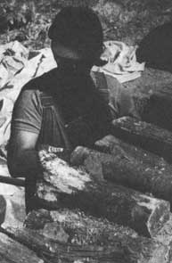

Ask Our Experts
Orchard ground cover; keeping a well safe from contaminants; finding an energy source for a passive solar log home; judging wood shrinkage for cordwood structures; earth-sheltered building methods.
By the Mother Earth News editors
May/June 1983
As most folks are well aware, an attempt to achieve a more self-reliant lifestyle often involves a good bit of problem solving . . . and much of the time, there just doesn't seem to be a ready supply of answers to the questions that come up. We're pleased to present, then, the following column . . . in which a number of well-known individuals from various areas of expertise (such as gardening, alternative building methods, hydroponics, water toxicity, and wood heating, to name a few) have agreed to act as "consultants" for you.
If a question concerning some aspect of self-reliant living has you stumped, send it to Ask Our Experts, THE Mother Earth News°, 105 Stoney Mountain Road, Hendersonville, North Carolina 28791. Please don't expect personal replies, though. The most frequently asked questions will be answered here-and here only-so that we can all benefit from what these folks have to say.
We have a four-year-old orchard on our farm in Tennessee, and we've been considering sowing the grassy areas between the trees with crown vetch . . . which, we hope, would conserve moisture, ease mowing chores, add nitrogen to the soil, and act as a living mulch to aid in weed control. Will the lush growth harm the young fruit trees? And, if so, what other low-maintenance ground covers would you suggest? (We're also concerned about the new growth encroaching on adjacent gardening areas.) Finally, will our eight Chinese weeder geese that feed in the 1/4-acre orchard stay fit on a diet of crown vetch?
In your situation, crown vetch (Coronilla varia) probably is not the best choice for an orchard ground cover. Potential problems include its competition with the fruit trees for water and nutrients, its possible invasion of your garden space, and the unpalatability of the legume to your geese.
When choosing a suitable cover crop, you should first look to species that would provide nutritious forage for your geese.The grazing habits of these web-footed birds make them excellent orchard managers, as they'll not only reduce your mowing chores, but clean up diseased fruit as well. And-while the literature on this subject varies-it's generally agreed that the large birds prefer grasses over broad-leaved plants (the latter group includes legumes such as crown vetch). The geese at New Alchemy, for example, graze alfalfa reluctantly, and only if there's no grass available.
Furthermore, though grasses don't have the nitrogen-fixing capabilities of legumes, this disadvantage will be somewhat compensated for by the soluble nitrogen contained in goose manure. Moreover, it's been found that, in certain situations, legume under stories in orchards can actually provide too much nitrogen for optimal growth.
Also, it's true that certain ground covers might invade your garden . . . but in this situation, again, your geese would be an asset. Although geese will devour some vegetables, the birds will carefully weed around other undesirable (to them!) crops, such as potatoes and tomatoes. Therefore, rather than concentrating on keeping a ground cover out of the garden, you might actually want to locate some geese-suitable crops on the birds' side of your fence ... and let your feathered livestock do the weeding!
I've stressed the importance of geese rather than the values of specific ground covers because the large birds are extremely useful in orchard management . . . and, without information about your climate and soil, it's difficult to recommend a suitable crop. You should check with local growers and the agricultural extension service in your area for advice, and establish several small-scale plots to test the growth and palatability of your chosen ground cover. If you then decide that legumes are necessary, select a legume/grass mixture. (In such a case you might consider introducing ducks to your orchard, as they will graze some legumes . . . and are effective insecteaters, too.) You'll also find that it's a good idea to divide your orchard into two sections, and then rotate the birds to allow better pasture utilization and to avoid overgrazing.
Finally, because many ground covers compete with fruit trees for water and nutrients, mulching around the trees out to the drip line is a valuable technique. This method reduces water evaporation and provides organic matter and nutrients. Furthermore, the labor involved in mulching around the trees is minimal. We use partially decomposed leaves and add lime to the mulch when necessary. We've observed yet another advantage of using mulches: The geese keep the ground covering weed-free ... even when there's plenty of pasture available elsewhere. -John Quinney.
John Quinney is the research director at theNew Alchemy Institute. His work is based onan ecosystem approach to small farm design.
For information about the institute, write toN.A. L, Dept. TMEN, 237 Hatchville Road,East Falmouth, Massachusetts 02536.
I've heard horror stories about contaminants seeping into residential well water from area industrial sites, gas stations, and the like. To protect my family from this potential hazard, how often would you suggest that I test my well water, and where can I obtain the materials necessary for doing so?
Unfortunately, it is all too possible for residential water from private or community wells to be contaminated with toxic organic chemicals, or heavy metals, at concentrations that represent long-term health risks. For example, many toxic organic chemicals can cause significant health problems above a concentration of 10 parts per billion (PPB) . . . but until such a contaminant reaches, say, 100 PPB, it may remain completely tasteless and odorless. Therefore, detecting organic and heavy-metal contaminants in the appropriate concentration ranges can generally be done only by using sophisticated instruments in a chemical laboratory. Worse yet, a complete battery of tests by a commercial lab may cost well over $750! However, before you give up in despair or spend your hard-earned greenbacks, follow these suggestions:
First, find the source of your drinking water. If you have a private well, mark its exact location on a map of the surrounding area. Likewise, if you drink water supplied by a public utility, find the location of that well or reservoir and designate it on a map. Then walk or drive around all the land within a fivemile radius of the well, checking for any abandoned or operating industrial sites, hazardouswaste dumps, or municipal garbage pits. If your search turns up nothing, you can breathe a partial sigh of relief, because it's likely-though not guaranteed-that your well will not be contaminated by any sources of pollution beyond that radius.
If, however, you still want to have your water analyzed, call your state capital's EPA office or talk with a chemist at a local university. Tell these professionals the nature of your concerns and the results of your walking survey, and state precisely that you want your water analyzed for trace organic chemicals and heavy metals but not for bacteria, viruses, pH, or hardness. If these folks can't do the job, ask them for the names of at least three commercial laboratories that could possibly provide such a service.
Next, check with the county health department. Even if the people there don't have the sophisticated equipment necessary to analyze your water, they, too, should be able to recommend some reputable commercial labs that do.
Then, if you have no choice but to go the "commercial" route, contact several laboratories to learn about their services, prices, methods, and response time. Stress exactly what it is you're seeking, and check to be sure that the facility has a gas chromatograph (GC), to measure the trace organic compounds, and an atomic absorption spectrophotometer (AA), to measure the heavy metals. Also inquire whether the laboratory will do any preliminary GC scans in a "semi-quantitative" fashion, as this option can save you money if it's readily apparent that your water is uncontaminated. Finally, find out how and when to take the water sample. You simply cannot fill an old pickle jar with tap water and expect to get valid results!
There's no rule of thumb as to how often you should have your well water tested . . . rather, it'll depend upon your setting and the amount of money you want to spend. Regardless of your testing schedule, though, keep an eye on activities within the "zone of influence" around your well . . . to safeguard that water supply in the future. An ounce of prevention is truly worth a ton of cure!-David Burmaster.
David Burmaster, Ph.D. is a consultant on surface- and ground-water quality and hazardouswaste management. He is the author of numerous articles and reports on these topics.
I'm planning to build a 1,150-square-foot passive solar log home in northern Idaho. One of the problems I've encountered is determining where my power will come from. A source of "juice" is imperative, both for convenience (at a young 60 years of age I no longer want to "rough it") and because I hope to operate a small business on the land. However, the local power company quoted me a price of from $5,000 to $6,000 to run a line the 900 yards to my site. For that kind of money, I'd rather arrange my own source of electricity!
There's no stream on my place, so water power isn't the answer . . . and the site is hidden between two mountain ranges and protected by a mature cedar forest, making wind power a questionable alternative. We'll be operating a refrigerator, a water heater, lights, a washing machine, power tools, and a water pump.
Can you suggest a solution to my energy crisis? Any alternative to the power company must, of course, be economically feasible or there's little point in doing this.
A photovoltaic or photovoltaic/generator system could be an ideal solution to your power problem. You'll want to size the generator to handle your large loads (the power tools and washing machine, for instance) ... and when the generator is running, you can use it to charge your battery bank. Also install a small- or medium- sized photovoltaic array. Now you may wonder why-if the generator can produce all your power and charge your batteries-photovoltaic cells are necessary at all. However, there are several excellent reasons for investing in such a setup: [1] Tax credits for the entire system (installation, design, PV equipment, battery charger, generator and inverter, etc.) can reduce the system's cost by at least 40%, [2] noisy, nonrenewable fuel generators require maintenance, have "down time", and can sometimes be sources of aggravation as well as power, and [3] the combination PV/generator system is an attractive way to make the transition into renewable energy production while also keeping initial costs low. Later on, you can add to the photovoltaic array and phase out the fuel guzzler.-Joel Davidson.
Solar technology consultant Joel Davidson puts out the PV Network News (subscriptions are $10 a year). To join the organization, write PV Network, Dept. TMEN, 10615 Chandler Boulevard, North Hollywood California 91601.
When building a cordwood structure, how do you judge the shrinkage of the wood so that future air leaks are prevented?
It is best to eliminate that problem before it can develop. The amount of shrinkage in wood varies according to the age, moisture content, and species of the logs you're working with. The basic building blocks should have time to dry, shrink, and stabilize before you start construction. To make sure they do, cut all of your wood and then allow it to air-dry like firewood. Debarking and splitting the rounds will speed up this process considerably, and the chores are well worth the extra time and effort. -Jack Henstridge.
Jack Henstridge, the author of several books on stackwood construction, is the director of the Indigenous Material Housing Institute.
For information about the institute, write to IMHI, Dept. TMEN, Upper Gagetown, New Brunswick, Canada E0G 3E0.
I have a few questions concerning earth-sheltered building methods. First, is it more cost-effective to set such a dwelling back into the side of a hill, or merely to berm around the structure? Second, how should different soil types be dealt with? Finally, how much earth cover on the roof (if any) is desirable? (I live in an area that experiences between 4,000 and 6,000 heating degree-days annually.)
In your climate, it'd be to your advantage to orient your house in a southerly direction in order to make use of solar gain. Southern builders, on the other hand-who'll usually find that cooling is more of a problem than heating-may choose a different orientation to aid in dissipating heat. If your land has a south-facing slope, it'd be more economical to build into the hill, as less earth moving would be required. If your site is flat, however, you may find that excavating just 30" down will yield enough material to berm around the house without having to haul any additional fill. And in terms of energy savings, a bermed dwelling can be 95% as efficient as a completely below-grade structure.
As far as soil types go, the most important consideration is not to backfill directly against the walls with earth having poor percolation, such as clay. Instead, coarse sand or gravel should be placed against the house to allow water to find its way to the footing drains, thereby eliminating the possibility that freeze-expansion pressure will stress the waterproofing membrane. (Of course, if appropriate backfill isn't available on the site, it'll have to be hauled in.)
The earth layer on the roof should be thick enough to support a living ground cover, but it's not the place for growing trees and shrubs! Heavy earth roofs (2 to 4 feet thick) are not cost-effective, since they require expensive structures to support their load. In terms of insulating value, an extra 2 inches of rigid foam would be a better thermal barrier (and less costly to install) than an additional foot of earth. The advantages of the natural covering-as opposed to having no earth layer at all-are evaporative cooling in the summer, aesthetics, longevity, gradual drainage, and protection from the elements . . . all of which can be accomplished with no more than an 8-inch earthen roof here in northern New York (in drier areas, where water weight won't be a problem, 12 inches might be desirable).- Rob Roy.
Rob Roy is the director of the Earthwood Building School and author of several books on earth-sheltered housing and cordwood masonry construction. For a listing of his publications, or information about the school, write to Earthwood, Dept. TMEN, RR 1, Box 105, West Chazy, New York 12992.
 |
 |
|